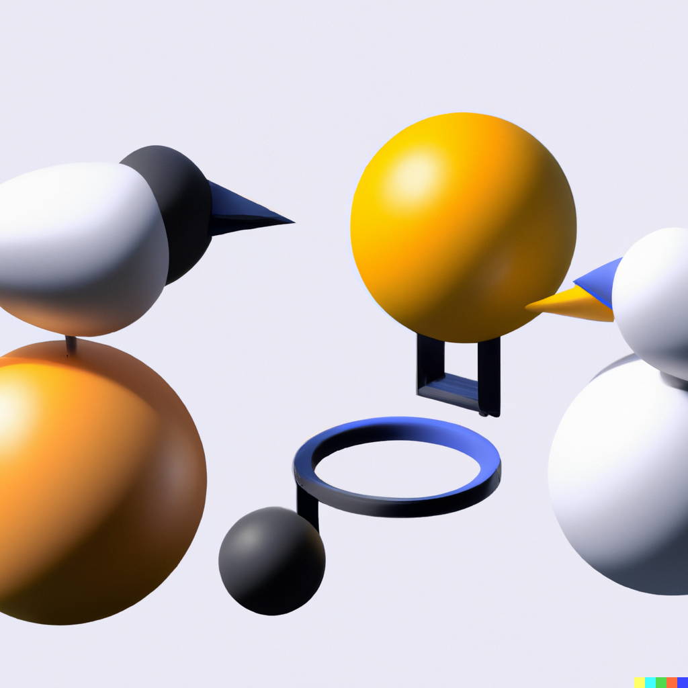

Bird balls
Here is the functional bird food known as BIRD BALLS.

Keen to attract birds to your garden with balls? But unsure? Think you
might, when accounting for everything, actually be repelling birds? Turn
your fortunes around with these bird balls, made from spare grease.
Ingredients
- Grease
- Ball shapers
- Plenty of time
Steps
- Consult the bird ball book
- Squeeze the grease between your fingers
- Slowly scrape grease from fingers into the ball shapers
- Sit down until a bird appears
- Present the bird ball
- Enjoy the company of a bird, now attracted to your bird ball
Return to the recipe page.